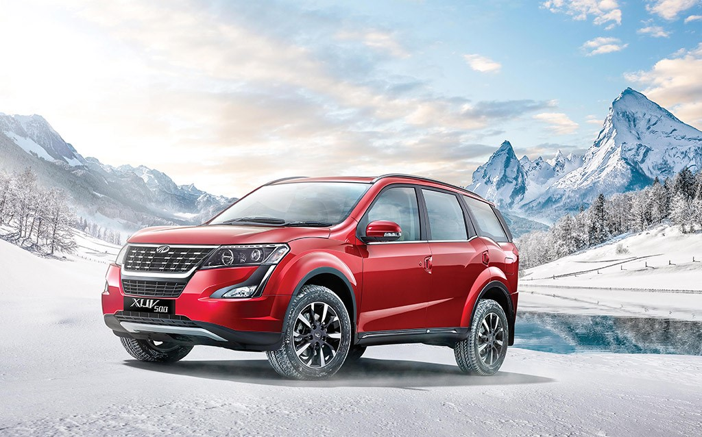
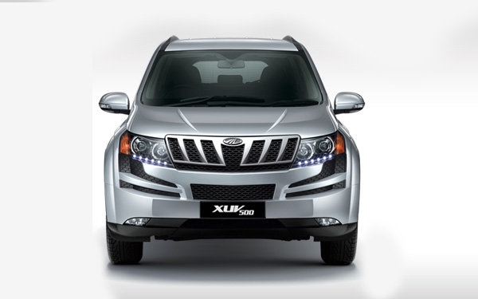
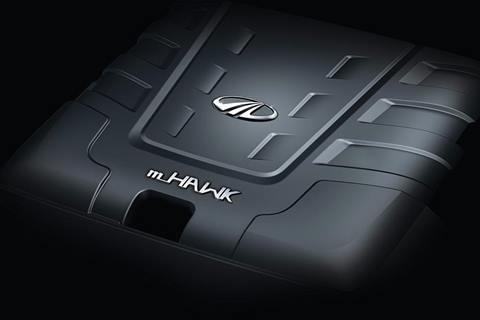
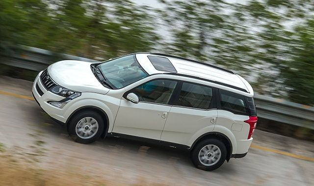

MAHINDRA XUV 500 2018
One glance at the Plush New XUV500 and you know its cheetah-inspired styling breaks the mould of the ordinary. Up front, the powerful projector headlamps with stunning new LED DRLs embrace the bold new front grille. The raised bonnet mimics the cheetah's strong and slender shoulders. Enhanced further with stylish new diamond-cut alloy wheels, the XUV500 has an enthralling and majestic presence on the road.
REVIEW
Even after being around for seven long years and (and not receiving substantial change to the overall design and features), the Mahindra XUV500 has been one of the most popular SUVs sold in India. However, there is a new crop of SUVs that have been launched and are slowly gaining popularity. How does Mahindra tackle that? The 2018 Mahindra XUV500 is here, with an updated design, a plusher feel and a more powerful engine.The changes to the 2018 Mahindra XUV500 sports over the previous model don't make it strikingly different in a passing glance. It is only when you close in on the front profile, you would notice the updated headlight assembly that now has the DRLs positioned on the top, instead of flowing across the unit. The major update is the new and larger piano-finished grille with chrome inserts and a chrome surround that makes the front look a tad larger than before.

Does it look any different?
The sides get a sprinkling of chrome on the door sills. However, it is the new 18-inch alloy wheels on the top-spec W11 (O) variant (replacing the 17-inch wheels) that get one's attention. The larger tyres with diamond cut alloys fill the wheel well impressively and also give the side profile a stylish touch.The major update is the new and larger piano-finished grille with chrome inserts and a chrome surround that makes the front look a tad larger than before. The fog lamp housing too has received an update, however, the front bumper design remains untouched.Typically, facelifts have the front end of a vehicle receive majority of the changes, but in the case of the 2018 Mahindra XUV500 it is the rear that has received a more comprehensive update.The new and larger lights flow in on the tailgate. The rear number plate area also gets a solid chrome highlight. And then there is also the new roof mounted spoiler. When viewed from the rear quarter you realise the updates have actually made the new Mahindra XUV500 a lot smarter than before.

Plusher cabin with new tech
The steering and the overall dashboard design is untouched but the upper portion of the dash sports black faux-leather inserts with white stitching now, giving it a soft touch feel. The instrument cluster design has not been changed either and looks dated now.The centre console has a piano black finish which has its pros and cons. It has replaced the plastic-y finish on the switches and also looks more premium but the glossy surface attracts dirt quite easily.The infotainment system comes with new applications for entertainment or even ordering food! There is also a new smartwatch app that lets you control AC temperature, choose audio source and also view tyre pressure and fuel information. Another update is the Arkamys tuned music system.
Since this is a facelift, the dimensions inside-out remains unchanged. There's tons of useful storage spaces on the dashboard, between the front seats, the door trims and also the generous boot space that can easily swallow almost everything thrown at it.

Mo power!
The engine feels quicker to respond, especially at lower engine speeds. The XUV500 managed a 0-100kmph time of 12.6s which is decent for an SUV weighing over 2 tonnes. The improved performance comes in handy when driving in traffic. The power boost comes before 2,000rpm and stays strong till 4,000 rpm. The engine is more audible at low revs, but gets quieter as it build revs.The 2,179cc diesel engine is the same as before but has received a host of updates and is more powerful now. In its updated form, the diesel engine (codenamed mHawk155) makes 155PS at 3,750rpm and generates 360 Nm from 1,750 to 2,800rpm, an improvement of 15PS and 30Nm. This has been achieved with the use of the sixth-gen electronically controlled eVGT (electronically controlled variable geometry turbocharger) instead of the older pneumatically operated unit.The engine feels quicker to respond, especially at lower engine speeds. The XUV500 managed a 0-100kmph time of 12.6s which is decent for an SUV weighing over 2 tonnes. The improved performance comes in handy when driving in traffic. The power boost comes before 2,000rpm and stays strong till 4,000 rpm.

Ride and handling
The Mahindra XUV500 continues to be offered in two drivetrains, the 2WD and the Borg Warner-developed AWD. Despite its large dimensions, the Mahindra XUV500 is relatively easy to maneouvre in city, though I wish the steering felt more direct.Driving aids like parking sensors and reverse camera come in handy when you are parking at say an ATM or in a mall. It comes equipped with McPherson struts upfront and multi-link type suspension at the rear.The 18-inch wheels helped in improving the ride quality a wee bit better over potholes and speed breakers. The suspension setup feels firm on the whole and makes for a slightly choppy ride on uneven sections on highways. In terms of safety, the 2018 Mahindra XUV500 comes equipped with disc brakes all-round, dual-airbags and ABS with EBD as standard, while the top, W11 variant boasts six airbags.
